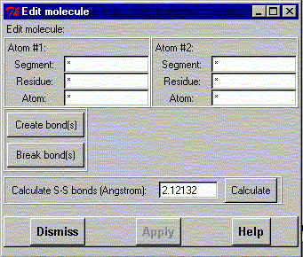

**************************************************************************
Edit molecule widget
Leif Laaksonen CSC 1997
**************************************************************************
Edit molecule geometry. Currently the only supported actions are:
Select the atom(s) and click on either the "Create bond" or "Break Bond" buttons. The S-S bond algorithm looks for S atoms inside a search radius, which can be changed by editing the input widget.
It is also possible to delete or create all bonds from a certain atom or atoms by deleting the atom selection input from the atom selection #2 list widgets.

Line command: see edit command
**************************************************************************
LUL/1996
**************************************************************************